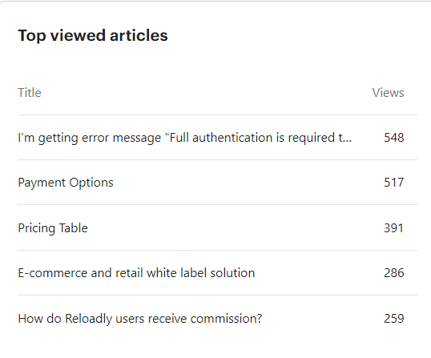

2021 has been a hell of a year!
Customer Support
We already had Moesif at the beginning of the year, and ramped up on alarms, graphs and we now have an extensive and detailed NOC that helps us detect any downtime within minutes of happening.
It wasn’t until April this year that we had 3 engineers in the Nigeria team to be able to handle the full workload and do the different shifts. Also Irene came and took over the routing responsibilities, testing, logging and updating data bundle information, removing Samuel’s bottleneck. This has been the year that we updated all bundle information finally into the API!
2021 has been the year of registering in our Confluence space all our processes and tools, creating a more streamlined support that has allowed us to reduce our first response time down from 30mins to 3mins some weeks, and always below 5mins, (90% improvement) and reducing our time to close from 50mins at the beginning of the year down to 9 minutes (82% improvement).
We have done a great job improving the quality of our Help Center and adding articles for every new question or product feature we released, including security, SDKs, giftcards, etc which has taken the self served support from 46.2% to 79% (71% improvement).
We received 5200 visitors (412% increase) at our Help Center with a total number of article views of 12343 (277% increase)
Our top viewed articles in 2021 were:

Our monthly active users have moved from 165 to 270 in airtime and from 0 to 28 in giftcards.
And we have experienced a major increase in transactions from 188454 to 355344, which is almost 200%
The top conversation tags are:
31% topup-successful
20% XTRANSFER
26% refund transaction
SDR
Onboarding
Retention
Retained Average revenue rate of over 90.2% monthly.
Expansion Average revenue rate of 13.78% monthly.
Resurrected Average revenue rate of 0.23% monthly.
New Average revenue rate of 0.50% monthly.
Community
We are also discussing implementing certifications for developers to increase brand exposure.
The Developer community data is as follows:
- 5203 total messages sent in Reloadly Developers community
- 262 members
- 50 average active users weekly
Integrate one skype group for support only, less errors, more streamlined support.
Complete one whatsapp number integration for key account support, stop using personal phones.
Complete career path and certification program for Customer Support team: include more soft skills
Increase self-served ratio by improvements on Help Center
Reduce disputes proactively working with Bender
Reduce traffic loss due to lack of balance in wallet - new notifications and reports, Bender
Automate testing for provider status daily
Load A-Z product list for each provider
Complete routing process mapping
Improve speed of integration for new accounts
Improve tracking throughout integration process
Create SDR team (based locally in each region)
Create more compelling success stories per industry and product
Share SLA in negotiation phase, reduce timeout conciliation issues
Hire more Tech Support Specialists to cover 24/7
Data consistency across platforms and syncing
Data insights on our customers usage to help them grow faster
Create Retention team
Customer Support
| Focus Area | ETA | Impact |
|---|---|---|
| Cover Americas shift | 2022 Q1 | Provide 24/7 support and accommodate the Americas load |
| Cover APAC shift | 2022 Q1 | Provide 24/7 support |
| Career Path and Certification Program | 2022 Q1 | Include new soft skills training to ramp up CSAT scores above 95% |
| Spend 1 day per quarter at CS | 2022 Q1 | Become a customer centric company |
| Complete Routing Process | 2022 Q1 Ongoing | Eliminate downtimes due to routing errors |
| Track and share Delivery Quality metrics | 2022 Q1 Ongoing | Create a new Key advantage for sales team |
SDR
| Focus Area | ETA | Impact |
|---|---|---|
| Hire new regional SDRs | 2022 Q1 | Provide new leads to account managers |
| Map all SDR processes | 2022 Q1 | Better ramp up SDR learning curve |
| Awareness campaigns for Crypto, Remittances and Tradeshows | 2022 Q1 | Increase new leads to account managers |
Onboarding
| Focus Area | ETA | Impact |
|---|---|---|
| Map integration process for key accounts | 2022 Q1 | Fast track key accounts to live status |
| Automate onboarding processes | 2022 Q1 | Be able to scale onboarding |
| Hire America and APAC Onboarding specialists | 2022 Q1 | Availability for onboarding support 24/7 |
| Implement Integration meeting | 2022 Q1 | Fast track key accounts to live status |
| Improve webinar quality and material | 2022 Q1 | Be seen and recognised as pros |
Retention
| Focus Area | ETA | Impact |
|---|---|---|
| Prepare QBR user metrics dashboard | 2022 Q1 | Increase expansion revenue |
| Create QBR process with Sales | Increase expansion revenue | |
| Complete Customer Journey Map, Ad-hoc messaging and Sequences | 2022 Q1 | Increase both activation and expansion revenue, reduce traffic loss |
| Start tracking expansion revenue rate | 2022 Q1 | Increase expansion revenue |
| Hire Retention Team | 2022 Q1 | Detecting traffic loss and recovering it faster Increase expansion revenue |
| Create new compelling success stories | 2022 Q1 | Lure more clients with compelling use cases |